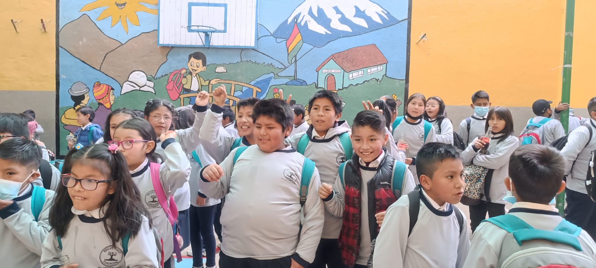
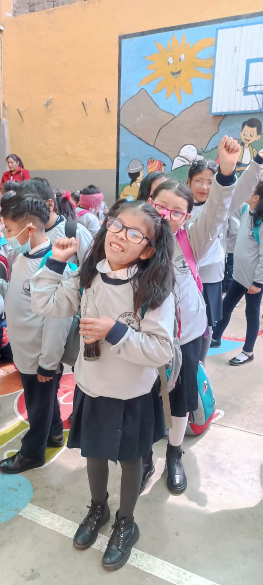

Fundación · La Paz, Bolivia · Desde 2018
Pequeñas acciones que forman grandes corazones
Llevamos educación, salud y oportunidades a niñas, niños y familias de las comunidades más vulnerables de Bolivia.
150tomatodos entregados en el Día del Niño
2convenios con instituciones aliadas
6acciones solidarias en 2025 y 2026
2018año de nuestra fundación

Quiénes somos
Creemos que la educación cambia vidas
Somos una organización sin fines de lucro que trabaja con las comunidades más vulnerables de Bolivia, con enfoque de interculturalidad, equidad de género y respeto por la Madre Tierra.
Lo que hacemos
Ver programas →
Cuatro áreas de trabajo
Acciones recientes
Ver todas →
Lo que ya estamos logrando

En video
Ver más videos →
Así se vive Edúcate y Crece
Educar también es enseñar a compartir, ayudar y ponerse en el lugar del otro.
Aliados
Juntos llegamos más lejos
CDHBComisión de Derechos Humanos y Atención Integral a Víctimas
Federación de Fabriles de BoliviaCampaña Solidaria Visual
U.E. Santa Rosa GrandeDía del Niño y entrega de poleras
Haz una donación
Material escolar, ropa deportiva, alimentos o un aporte económico. Todo llega a los niños y sus familias.
Quiero donarSé una institución aliada
Empresas, instituciones y organismos: firmemos un convenio para llegar a más comunidades.
Proponer una alianza